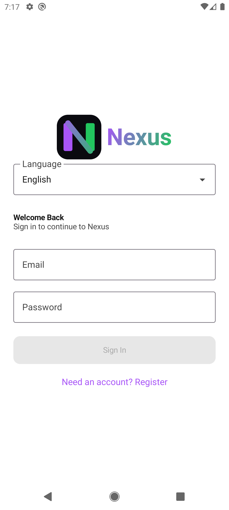
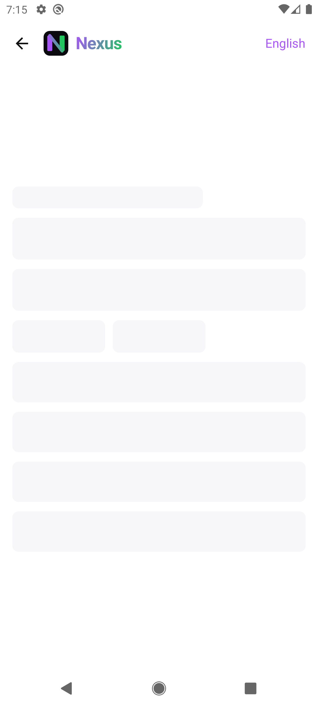

The README's product principles are the stated design intent. The table shows how far the code follows each one.
| ID | Principle (README) | Where it shows up in the app |
|---|---|---|
| DS-01 | Focus over clutter | The Today dashboard limits Upcoming to 3 tasks and shows "Nothing here." for empty cards {{F}}. |
| DS-02 | Fast capture | Floating + buttons on Projects, Tasks and Habits; dialogs need only a name or title; priority defaults to None and status to To do {{F}}. |
| DS-03 | Progress with context | Task list progress bar with "x of y tasks complete"; habit level, points and streaks {{F}}. |
| DS-04 | Calm by default | Short motion (150–300 ms), skeleton loaders instead of spinners, friendly empty states such as "A little progress, every day." {{F}} |
| DS-05 | Trustworthy data | A persistent sync banner always states whether changes are saved, pending, synced or in conflict {{F}}. |
NavigationBar with four destinations: Today, Projects, Habits, Settings. Navigating between them saves and restores state and uses launchSingleTop {{F}}.The full map is in [[DIAG-02]].
| Token | Value | Use |
|---|---|---|
| Brand purple / green | #A855F7 / #22C55E | Logo gradient and wordmark |
| Light primary / secondary | #6141B5 / #236B54 | Fallback scheme on Android 11 and earlier (commit log: "accessible fallback brand colors") |
| Dark primary / secondary | #D0BCFF / #22C55E | Fallback dark scheme |
| Background (light / dark) | #F7F7FC / #12131B | Overrides even when dynamic colour is on |
| Surface (light / dark) | #FFFFFF / #191A24 | Cards and sheets |
On Android 12 and later, Material You dynamic colour supplies primary, secondary and tertiary from the wallpaper, while background and surface stay fixed to the values above {{F}}. Contrast was not measured for this package {{U}}.
Spacing.kt: 2, 4, 6, 8, 10, 12, 16, 20, 22, 24, 32 dp. Top-bar logo 32 dp; auth logo 80 dp {{F}}.NexusPrimaryButton, NexusSecondaryButton, NexusDestructiveIconButton, StatCard, Skeleton, FeedbackState (empty/error with Retry), NexusLogo {{F}}.Motion.kt fixes durations: screen enter 220 ms, exit 180 ms, list item 220 ms, fade 150 ms, completion bounce 90 + 140 ms, success check 260 ms. Screen transitions slide a quarter width and fade {{F}}.
| Aspect | Evidence | Status |
|---|---|---|
| Reduced motion | rememberReduceMotion() checks ValueAnimator.areAnimatorsEnabled(); navigation transitions, list reflow, shimmer and splash are skipped. SplashIntroScreenTest covers the splash. | {{F}} |
| Screen reader labels | Icon buttons have descriptions such as "Back", "New Project", "Add habit", "Edit habit", "Remove label …", "Clear due date". Bottom-bar icons use null descriptions, with the visible text label as the accessible name. | {{F}} |
| Not relying on colour alone | Priority and status are shown as text chips ("Priority · High"), not colour only. | {{F}} |
| Keyboard / IME | windowSoftInputMode="adjustResize"; auth forms scroll above the keyboard (improvements log). | {{F}} |
| Contrast, touch targets, TalkBack walkthrough | No measurements or audit records in the repository. | {{U}} → [[IMP-11]] |
| Localised content | en/zu/tn resource strings for auth and a few labels; feature screens are English-only. | Partial ([[FR-18]]) |
Layouts are single-column phone layouts built with fillMaxWidth, LazyColumn and horizontally scrolling chip rows. Window insets are handled with statusBarsPadding. No window size classes or tablet layouts exist; tablet layouts are listed as planned {{F}}. Landscape behaviour has not been tested {{U}}.
Only two distinct, correctly identified screenshots exist in the repository. The UI-audit folder docs/screenshots/ui-audit/ contains nine files, but they are only four distinct images, and their file names do not match their content ([[AUD-21]]). Both images below were captured on 2026-09-25, before the 2026-10-04 navigation and sync-banner changes, so they may not match the current UI.

splash.png).
dashboard-offline.png).{{R}} Recapture the screen set from a running build and replace the folder contents ([[IMP-16]]); [[NX-10-UM]] intentionally uses text-only instructions until then.